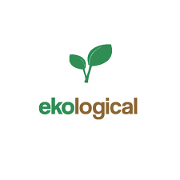
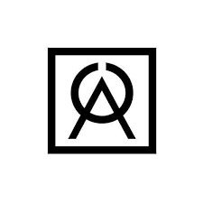

Bem-vindo à Aloma! Oferecemos uma linha completa de
cosméticos sustentáveis, feitos com ingredientes naturais e ecológicos. Nossa
missão é promover beleza e bem-estar, respeitando o meio ambiente e valorizando
práticas éticas. Descubra produtos que cuidam de você e do planeta com a Aloma.

SITE EKOLOGICAL.COM.BR
Bem-vindo à Ekological! Oferecemos uma ampla gama de produtos sustentáveis,
desde itens de uso diário até acessórios ecológicos. Nossa missão é promover um estilo de vida
consciente e responsável, ajudando você a fazer escolhas que beneficiem o meio ambiente. Descubra
como pequenas mudanças podem fazer uma grande diferença com os produtos da Ekological.

SITE ORIBA.COM.BR
Bem-vindo à Oriba! Descubra nossa coleção de roupas sustentáveis, feitas com materiais
ecológicos e produzidas de forma ética. Nosso compromisso é unir estilo, conforto e responsabilidade ambiental,
oferecendo moda consciente para quem quer se vestir bem e cuidar do planeta. Escolha Oriba e faça a
diferença com cada peça.